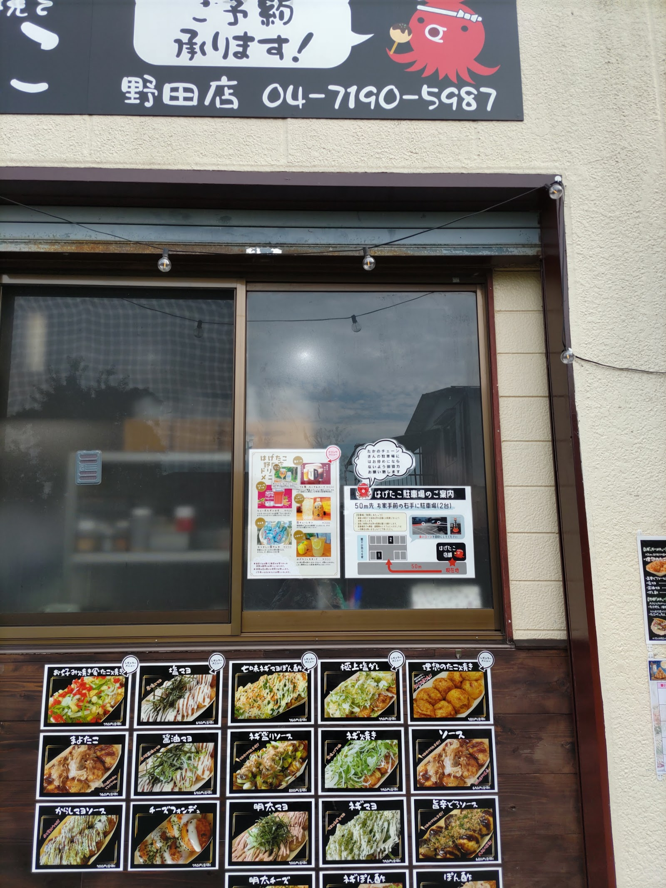

店舗紹介
本場大阪たこ焼き はげたこ 野田店のご案内
店舗ストーリー
本場大阪たこ焼き はげたこは、茨城県守谷市で本店を構え、長きにわたり大阪仕込みのたこ焼きを焼き続けてまいりました。開店から今日まで、地域の皆様に支えられながら、一枚一枚丁寧に焼き上げる姿勢を大切にしてきました。
そうした本店での歩みを土台に、2025年6月2日、千葉県野田市に2号店として「はげたこ 野田店」を開店いたしました。本店でお世話になった方々との縁や、焼き場で重ねてきた経験を糧に、野田の町でも同じ味をお届けしたいという思いで店を構えております。
大阪仕込みのこだわり

生地
大阪仕込みの配合にこだわり、外はかりっと、中はとろりとしたふわとろの食感を目指しています。一枚ごとに丁寧に火を通し、焼き上がりの食感を大切にしております。
出汁
生地には出汁の旨みをしっかりと含ませ、たこ焼き本来の味わいを楽しんでいただけるよう仕込んでおります。シンプルながら奥行きのある味を目指しています。
焼き技術
鉄板の温度管理と返しのタイミングにこだわり、熱々でとろとろの状態でお渡しできるよう焼き上げております。焼き手の経験が、食感の決め手となっています。
店頭の様子

営業情報
- 営業時間
- お問い合わせください
- 定休日
- お問い合わせください
- 駐車場
- 駐車場あり(台数等は店舗にご確認ください)
- 電話
- 04-7190-5987(タップで発信)